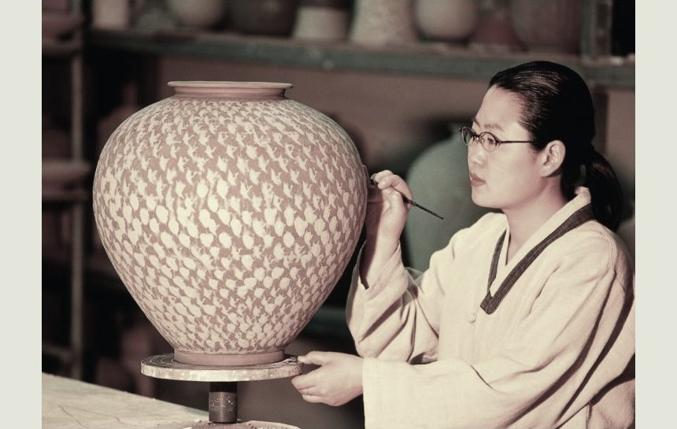
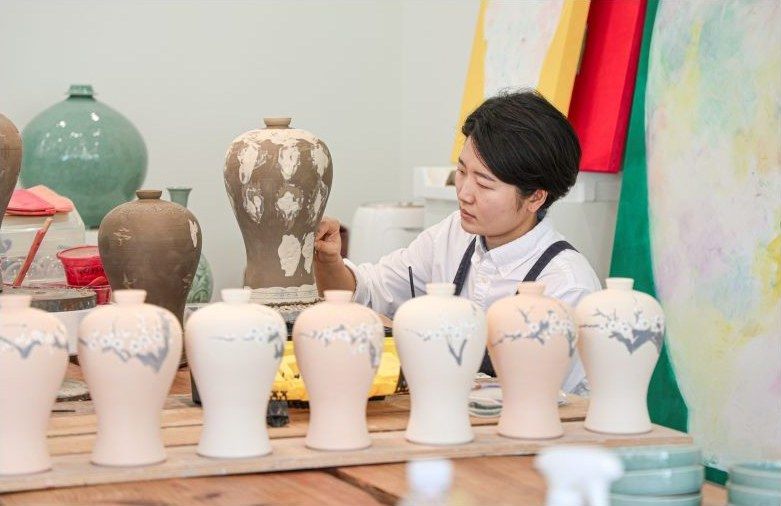
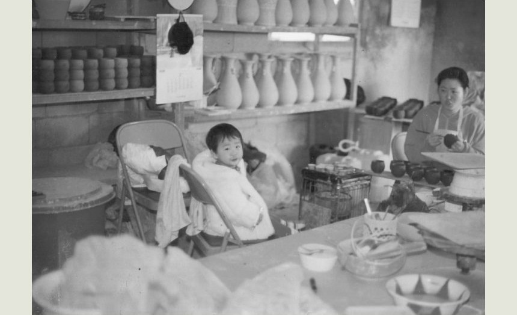
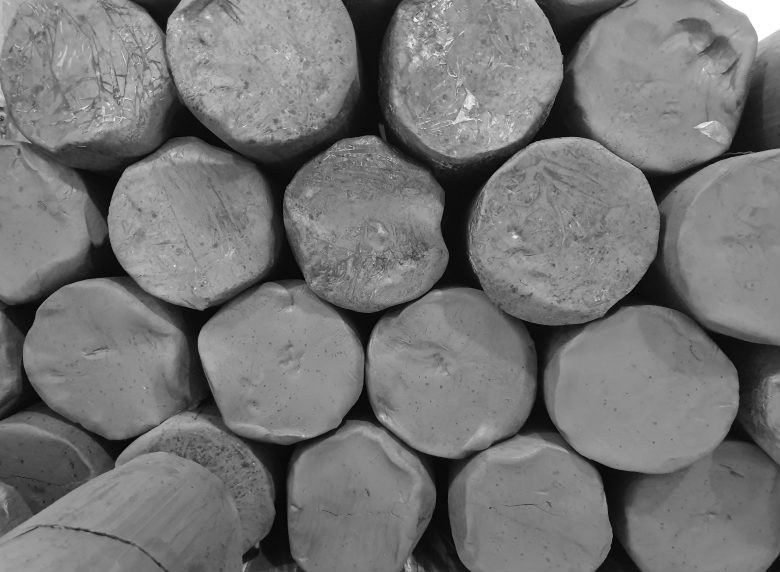
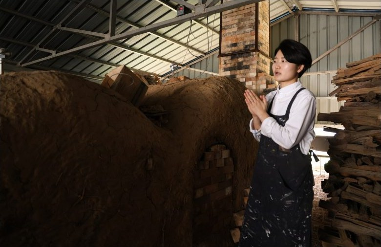
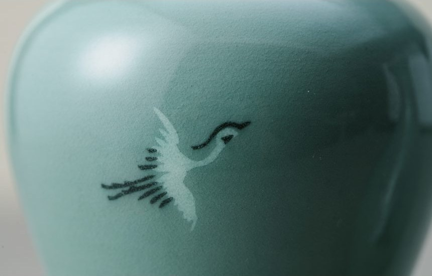

1대 · 강진탐진청자를 운영하신 어머니
01
1987년, 강진탐진청자에서 시작했습니다
고려청자의 본향 강진 대구면 청자촌. 어머니가 1987년 강진탐진청자의 문을 열었고, 그 물레 옆에서 아이가 자랐습니다.
지금은 주식회사 국보로 법인을 바꿔 2대째 같은 자리에서 같은 방식으로 청자를 빚습니다.
강진 대구면 청자촌(구)강진탐진청자주식회사 국보


2대 · 김보배 대표 — 청자 작업실에서 자란 어린 시절
02
강진 유일의 청자 가업승계자, 김보배
작업실에서 자란 아이가 이제 물레 앞에 앉습니다. 성형·조각·상감부터 시유와 소성, 선별과 포장까지 모든 공정에 작가의 손이 직접 닿습니다.
2023년 전국민화공모전 대상(문화체육관광부 장관상), 2024년 중소벤처기업부 강한 소상공인 성장지원사업 전남 유일 선정.
민화공모전 대상강한 소상공인 · 전남 유일사회적기업가 육성사업


3년 숙성 청자토 · 1300℃ 가마
03
흙은 3년을 재우고, 불은 1300℃를 다스립니다
최고급 청자의 기본은 강진의 청자토. 흙을 3년 이상 재워 고르고, 자연재료로 만든 무균열 청자유약을 입혀 1300℃ 환원 소성으로 비색을 얻습니다.
티가 있는 것은 과감히 내려놓습니다. 그래서 정상품은 식기세척기·전자레인지에도 쓸 수 있는 튼튼한 청자가 됩니다.
3년 숙성 청자토무균열 천연유약1300℃ 환원소성

비색(翡色) · 백상감 운학문
04
천 년의 비색, 오늘의 식탁과 서재로
박물관 유리 너머의 고려청자가 아니라, 손에 쥐고 쓰는 청자. 상감 매병과 달항아리 같은 작품부터 모란·푸딩 시리즈 생활식기, 감사패까지 — 모두 한 공방에서 나옵니다.
작품은 국·영문 작품 보증서와 함께 전해 드리며, 오동나무 함 각인 제작이 가능합니다.
작품 도록 66점생활식기 41종감사패 주문 제작